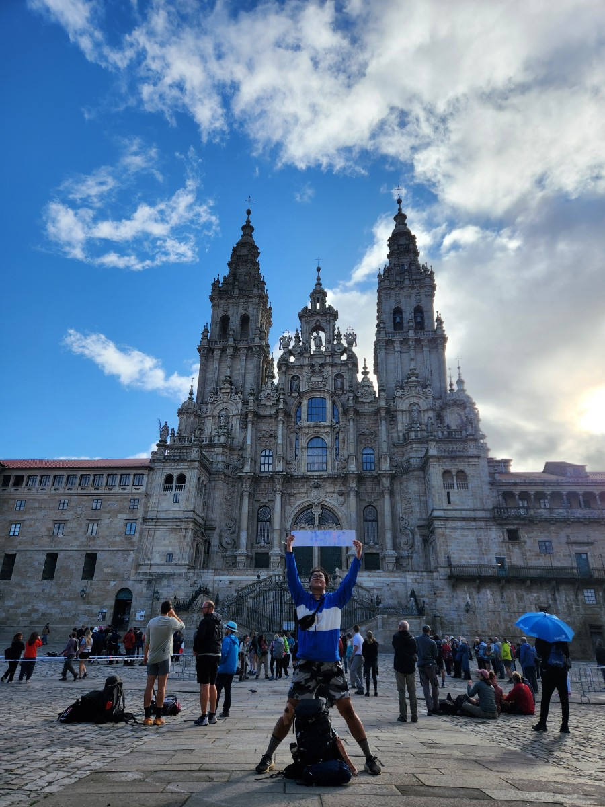
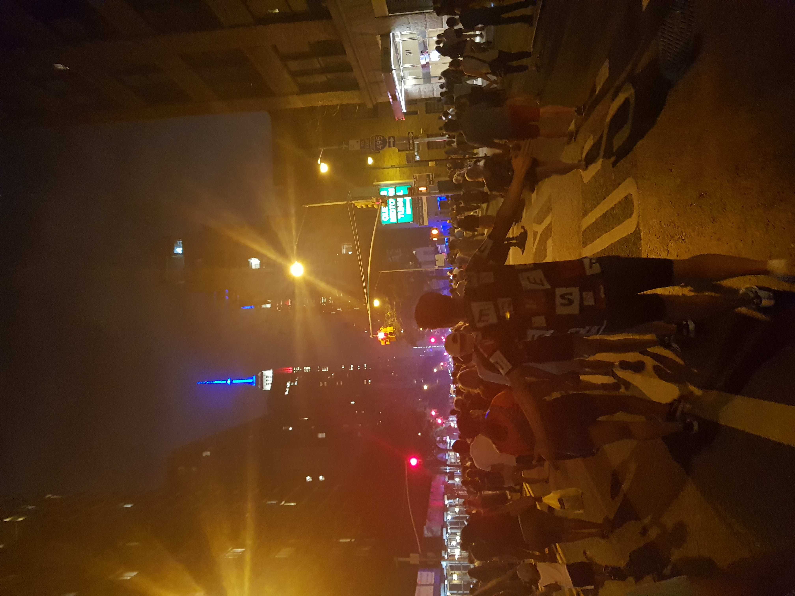
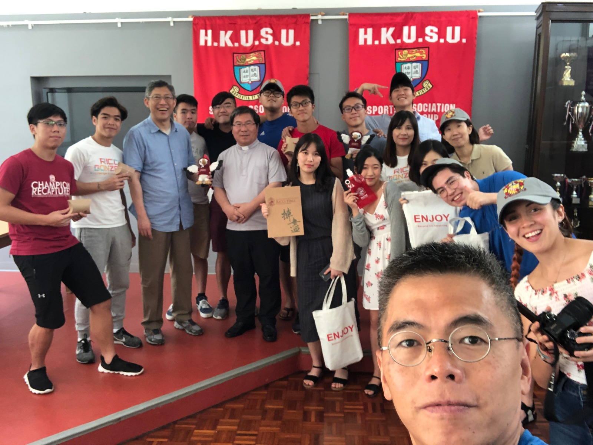

02 / AUDIO
여행의 소리
제가 보유 중인 오디오 파일이 없어, 저작권 문제가 없는 샘플 오디오를 별도로 다운로드해 사용했습니다.
TRAVEL ARCHIVE
media 형태를 연습하기 위한 나의 여행 앨범입니다.
사용 element : <figure> <img> <figcaption>
<iframe> <audio> <video>
CSS는 이 HTML 파일 내에서 적용하지 않고, 외부 style.css 파일에서
적용됩니다.
01 / PHOTO NOTES



02 / AUDIO
제가 보유 중인 오디오 파일이 없어, 저작권 문제가 없는 샘플 오디오를 별도로 다운로드해 사용했습니다.
03 / VIDEO
세로로 촬영한 여행 영상이 잘리지 않도록 원본 비율을 유지해 표시했습니다.